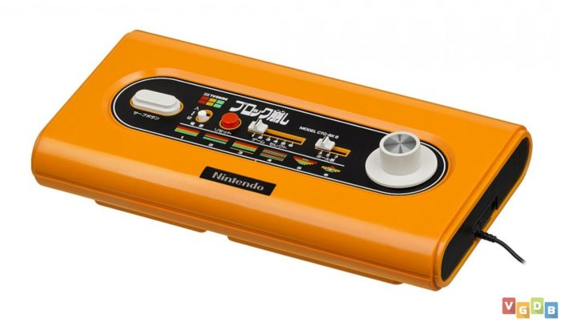
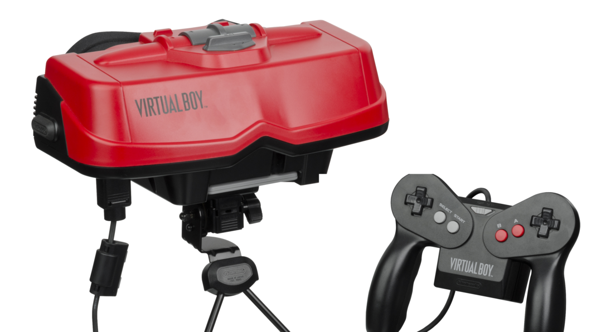
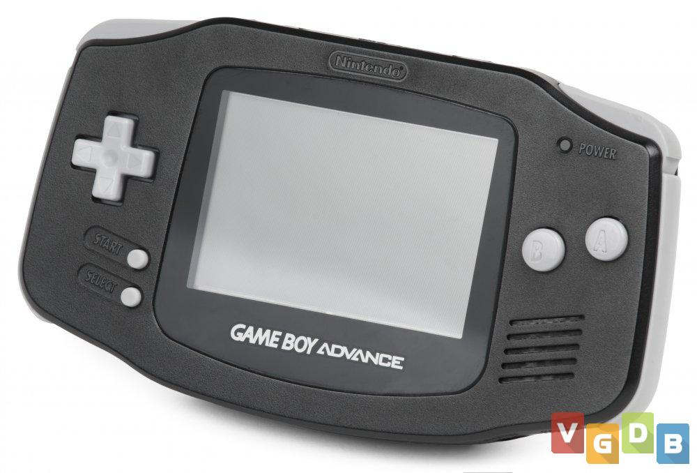
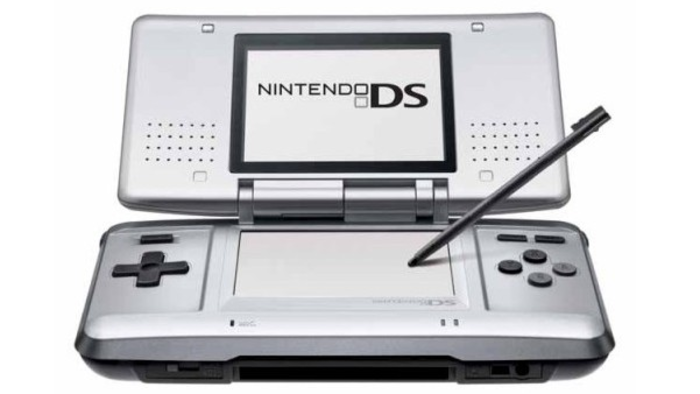
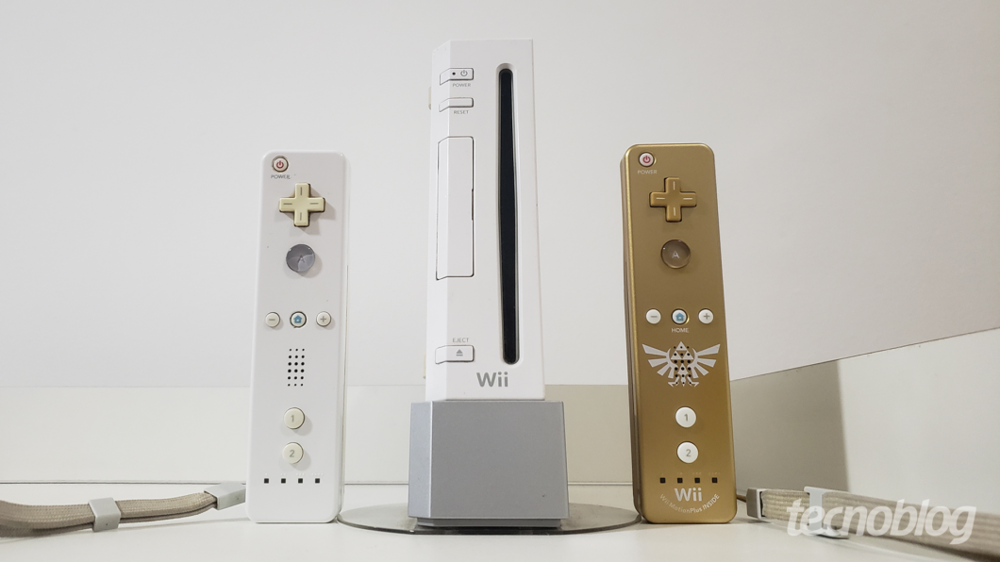

Nintendo Company
A Nintendo é uma empresa japonesa de videogames fundada em 1889 por Fusajiro Yamauchi. Inicialmente, ela produzia
cartões de baralho tradicionais japoneses, chamados hanafuda, e começou a atuar com os videogames em 1977, quando
lançou o console Color TV Game.
A Nintendo Co. Ltd., sediada em Quioto, no Japão, é responsável por séries que já se tornaram ícones em todo o
mundo, através dos seus produtos de hardware e software integrados. Mario™, Donkey Kong™, The Legend of Zelda™,
Metroid™, Pokémon™, Animal Crossing™, Pikmin™ e Splatoon™ são apenas algumas das mais populares neste momento.
A Nintendo tem como objetivo proporcionar a todos experiências de entretenimento únicas e intuitivas, fabricando
e comercializando dispositivos de videojogos como a família de consolas Nintendo Switch™, desenvolvendo e operando
aplicações para dispositivos móveis e colaborando com parceiros numa variedade de outras iniciativas de
entretenimento, como conteúdos visuais e parques temáticos.
A Nintendo já vendeu mais de 5.5 mil milhões de videojogos e mais de 800 milhões de consolas em todo o mundo.
Desde o lançamento da Nintendo Entertainment System™ há mais de 30 anos e até ao futuro, a missão contínua da
Nintendo é a criação de experiências de entretenimento únicas capazes de colocar sorrisos nos rostos de pessoas em
todo o mundo.
Principais lançamentos da empresa
A Nintendo continuou a inovar nos anos seguintes, lançando consoles como o Game Boy, o Super Nintendo
Entertainment System (SNES), o Nintendo 64 e o GameCube. O Game Boy foi o primeiro console portátil da empresa,
lançado em 1989, e apresentava jogos populares como Tetris, Pokémon e Super Mario Land.
O SNES foi lançado em 1990 e tinha jogos como Super Mario World, Donkey Kong Country e The Legend of Zelda: A
Link to the Past. O Nintendo 64 foi lançado em 1996 e foi o primeiro console da empresa a apresentar gráficos 3D,
com jogos como Super Mario 64, The Legend of Zelda: Ocarina of Time e Mario Kart 64.
Consoles
1. Color TV-Game

A primeira série de consoles lançada pela Nintendo não era lá muito original. Inicialmente, os sistemas tinham a
licença da Magnavox para serem basicamente clones do famoso Pong, jogo que usava barras que rebatiam uma “bola
quadrada”. Depois disso, outros quatro modelos foram lançados com jogos simples como corrida ou quebra de blocos.
Data de lançamento original:
1 de junho de 1977
Modelos:
Color TV-Game 6, Color TV-Game 15, Color TV Racing 112, Color TV Block Kuzushi, Computer TV Game
2. Game & Watch

Criando uma linha com vários sistemas diferentes e apresentando ao mundo muito da filosofia que a Big N iria
seguir por toda a sua vida, o Game & Watch foi um enorme sucesso. Com uma produção que durou mais de dez anos, o
pequeno console da Nintendo unia a utilidade de um relógio com a diversão descompromissada de um mini jogo.
Sua simplicidade, bateria de longa duração e preços mais baixos se tornaram pilares que a empresa japonesa usaria
em muitas de suas outras empreitadas. Durante a sua vida e sua popularidade, o sistema recebeu versões temáticas e
até mesmo para dois jogadores.
Data de lançamento original:
28 de abril de 1980
Modelos:
Silver, Gold, Wide Screen, Multi Screen, New Wide Screen, Tabletop, Panorama, Super Color, Micro
VS System, Crystal Screen, Nintendo Mini Classics, Color Screen.
3. Nintendo Entertainment System

Um dos consoles mais importantes de todos os tempos, não só da Nintendo, mas de toda a indústria. O NES (ou
Famicom, dependendo de sua região de preferência) foi o berço de muitas franquias gigantescas como Castlevania,
Dragon Quest, Final Fantasy, Metroid, etc.
Seu sucesso foi mundial, alcançando vendas astronômicas e oferecendo um certo monopólio à Big N durante muitos
anos. Foram vendidas quase 62 milhões de unidades ao redor do mundo. Em junho de 2019 foi lançada uma versão mini
do console que obteve muita popularidade.
Data de lançamento original:
15 de julho de 1983
Modelos:
Famicom, NES, NES Control Deck (Top-loader), NES Classic
4. Game Boy

O Game Boy, sucessor do Game & Watch, é um dos consoles da Nintendo que mais tempo durou nas prateleiras das
lojas e nas casas dos jogadores, sendo descontinuado oficialmente apenas em 2003. O sistema alcançou em toda a sua
vida uma impressionante marca de mais de 118 milhões de unidades vendidas. Isso contando todos os seus modelos,
claro.
Sua excelente biblioteca de jogos e seu uso de pilhas que duravam muitas horas eram fatores predominantes que
sempre venciam a concorrência. Franquias como Tetris, Super Mario, Contra e Pokémon fizeram parte da fundação de
sucesso do portátil criado por Gunpei Yokoi. Até hoje, o Game Boy tem uma grande legião de fãs.
Data de lançamento original:
21 de abril de 1989
Modelos:
Game Boy, Game Boy Pocket, Game Boy Light, Game Boy Color.
5. Super Nintendo

Não era uma tarefa fácil ser o sucessor do NES, mas o SNES não apenas conseguiu preencher esse espaço como o fez
muito bem. Renovações de franquias como Donkey Kong e Mega Man ocorreram ao lado de novidades como F-Zero e
Pilotwings, deixando claro que o console da Nintendo era uma evolução natural na indústria.
Além disso, o seu icônico controle popularizou os botões de ombro (R e L), trazendo títulos dos arcades como
Mortal Kombat e Street Fighter para o conforto dos lares. Por fim, se você queria jogar bons RPGs nessa época, o
SNES era a sua casa. Quase 50 milhões de unidades foram vendidas deste videogame.
Data de lançamento original:
21 de novembro de 1990
Modelos:
Super Famicom, Super Nintendo, SNS 101 (SNES Baby/Super Famicom Jr.), SNES Classic Edition.
6. Virtual Boy

Considerado como o maior fracasso da Nintendo, este console chegou com uma ideia de realidade virtual. Porém, o
seu design desajeitado, desconforto visual e físico além de uma biblioteca extremamente limitada (apenas 22 jogos)
fizeram com que o Virtual Boy fosse descontinuado cerca de 8 meses após o seu lançamento.
A própria Nintendo pouco menciona a sua existência, já que menos de um milhão de unidades foram vendidas em todo o
mundo. Chamar de insucesso é pouco.
Data de lançamento original:
16 de agosto de 1995
Modelos:
Apenas o modelo original.
7. Nintendo 64

Indo totalmente contra a maré da época, a casa de Mario decidiu seguir com os cartuchos ao invés dos CDs como
mídia de seu console, o Nintendo 64. Com isso, o tempo de loading foi reduzido, porém as animações em CG e
capacidade de armazenamento dos jogos foram perdas significativas em comparação aos concorrentes.
Mesmo assim, o sistema trouxe pérolas que foram eternizadas para a indústria de games e seus fãs. The Legend of
Zelda: Ocarina of Time, Banjo Kazooie, 007 Goldeneye, Super Mario 64 são alguns dos títulos que até hoje são
considerados o apogeu de seus gêneros. Com um número próximo de 33 milhões de unidades vendidas, o Nintendo 64 se
tornou um sucesso para quem o teve em casa.
Data de lançamento original:
23 de junho de 1996
Modelos:
Nintendo 64, iQue, Variações de cores (Funtastic Color Series) e case (Pikachu Edition, por
exemplo).
8. Game Boy Advance

Prometendo um sistema poderoso que poderia usar toda a biblioteca da família Game Boy, a Nintendo trouxe o GBA
para garantir a sua supremacia no mercado dos consoles portáteis. Não deu outra: mais de 80 milhões de unidades
vendidas e uma leva de títulos de fazer inveja a qualquer videogame.
Além de ter novas versões de séries icônicas como Pokémon, The Legend of Zelda e Metroid, o pequeno notável ainda
ganhou Sonic, Splinter Cell, Golden Sun, entre outros clássicos. Suas variações apenas aumentaram a sua
popularidade, o fazendo se tornar um senhor console, mesmo em um pacote tão pequeno.
Data de lançamento original:
21 de março de 2001
Modelos:
GBA, GBA SP, GBA SP (AGS-101), Game Boy Micro.
9. Nintendo GameCube

Durante a sua jornada de pouco mais de cinco anos, o Nintendo GameCube foi um console pouco popular entre os
gamers. Com uma mídia em mini-DVD, o sistema se diferenciava de seus concorrentes não apenas em seu design
minimalista, mas também nos recursos, ou na falta deles. Não é possível assistir DVDs no GameCube, por exemplo.
Mesmo assim, muitos jogos de grande qualidade foram lançados. Mario Kart: Double Dash, Resident Evil 4, Metroid
Prime e Fire Emblem: Radiant Dawn são algumas amostras dessa excelência. Além disso, havia um interessante uso de
conexão entre esse console e o Game Boy Advance, algo pouco visto na indústria até então.
Data de lançamento original:
14 de setembro de 2001
Modelos:
GCN, Panasonic Q.
10. Nintendo DS

Depois do sucesso da família de consoles Game Boy, a Nintendo estava mais do que preparada para encarar uma nova
geração. Com isso em mente, o Nintendo DS chegou inovando com suas duas telas e novas formas de jogabilidade por
causa de sua touchscreen.
Alcançando a surpreendente marca de 154 milhões de unidades vendidas por todo o mundo, o portátil se consolidou
como o sistema a ser batido. Com ele, inúmeros jogos caminharam lado a lado. Obras como Nintendogs, Professor
Layton and the Curious Village, GTA: Chinatown Wars e muitos outros mostraram como a biblioteca do DS é abrangente
e bastante única.
Data de lançamento original:
21 de novembro de 2004.
Modelos:
Nintendo DS, DS Lite, DSi, DSi XL.
11. Wii

Antes de seu anúncio oficial, o codinome do Wii era Revolution. A Nintendo sabia muito bem o que iria acontecer
na indústria de games quando o console fosse lançado. Porém, o que vimos foi muito mais do que uma revolução, foi
um fenômeno. De repente, todas as empresas queriam um pedaço desse novo ramo dos sensores de movimento.
Por causa de seus controles intuitivos com poucos botões (em comparação aos concorrentes), o Wii conseguiu
alcançar todo o tipo de pessoa, desde os mais novos aos mais velhos. Títulos como Wii Sports, Mario Kart Wii e Wii
Fit estouraram no quesito popularidade. Enquanto isso, jogos como Super Mario Galaxy, Xenoblade Chronicles e No
More Heroes agradaram os fãs mais hardcore.
Data de lançamento original:
19 de novembro de 2006.
Modelos:
Wii, Wii (RVL-101), Wii Mini.
12. Nintendo 3DS

Para o sucessor do DS, a Big N decidiu manter muitos dos mesmos estilos de jogos enquanto melhorava todos os
outros quesitos no aparelho. É claro que algo ainda precisava ser totalmente inovador, então foi a possibilidade
de curtir jogos em 3D sem óculos o grande chamativo do Nintendo 3DS.
Com funcionalidades variadas desde o Street Pass (função que oferecia bônus se mantivesse o portátil no estado
sleep) a jogatina online, o console obteve um estrondoso sucesso para a Nintendo. Mais de 70 milhões foram
vendidas ao redor do mundo. Sua biblioteca é bastante completa, há obras como Super Mario 3D Land, Tomadachi Life,
Resident Evil Revelations e a primeira versão portátil de um Super Smash Bros.
Data de lançamento original:
26 de fevereiro de 2011.
Modelos:
Nintendo 3DS, 2DS, 3DS XL, New 3DS, New 2DS XL, New 3DS XL.
13. Wii U

Mesmo sendo considerado um fracasso colossal com menos de 14 milhões de unidades vendidas, o Nintendo Wii U é um
console que tinha muito potencial.
O primeiro sistema da Big N a usar saída em HD, o videogame tem como principal controle o Gamepad, um periférico
com tela de toque própria. Além disso, ele tem total retrocompatibilidade com o Wii, desde jogos a acessórios.
Títulos como Super Mario 3D World e Splatoon são ótimos, mas não foram o suficiente para prender a atenção dos
jogadores.
Para sanar as dificuldades em vendas que a empresa tinha na época, a Nintendo decidiu lançar o sucessor do Wii U
um pouco mais cedo.
Data de lançamento original:
18 de novembro de 2012.
Modelos:
Modelo de 32 GB, Modelo de 8GB (Basic Set).
14. Nintendo Switch

O primeiro console totalmente híbrido da Nintendo chegou com uma pequena desconfiança depois do fracasso do Wii
U, porém o Switch mostrou-se uma ideia forte o suficiente para se tornar um dos maiores êxitos da companhia.
Seu design que permite a jogatina tanto na televisão quanto em formato portátil o ajudou a reunir popularidade em
diversos países. Além disso, por causa de uma biblioteca em constante expansão, o sistema conseguiu trazer de
volta todos os tipos de jogadores. Sendo assim, se um videogame tem uma forte base instalada, as desenvolvedoras
passam a produzir jogos com maior frequência.
É desse jeito que o Switch já tem clássicos como Super Mario Odyssey, The Legend of Zelda: Breath of the Wild,
Shin Megami Tensei V, Monster Hunter Rise, Ori and the Will of the Wisps, entre muitos outros. A questão que fica
é: até onde esse console vai?
Data de lançamento original:
3 de março de 2017.
Modelos:
Nintendo Switch, Switch Lite, Switch OLED.